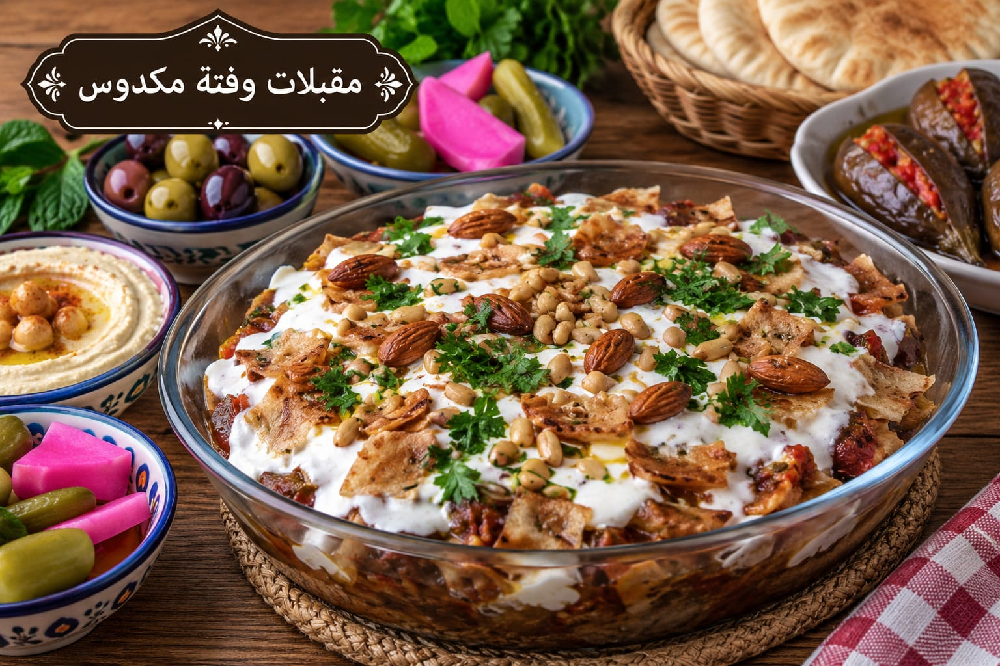

مقبلات وفتة مكدوس
تشكيلة مقبلات مع فتة باذنجان

مقادير مقبلات وفتة مكدوس
- 3 حبات باذنجان
- 2 رغيف خبز عربي
- 2 كوب لبن
- 3 ملاعق كبيرة طحينة
- 2 فص ثوم
- عصير ليمونة
- 1 ملعقة صغيرة ملح
- ½ كوب حمص مسلوق
- 2 ملعقة كبيرة صنوبر
- بقدونس للتزيين
طريقة عمل مقبلات وفتة مكدوس
- قطعي الباذنجان واشويه أو حمريه حتى يصبح طريًا وذهبيًا.
- قطعي الخبز وحمصيه حتى يصبح مقرمشًا.
- اخلطي اللبن والطحينة والثوم والليمون والملح حتى تتكون صلصة ناعمة.
- ضعي الخبز ثم الباذنجان والحمص، واسكبي صلصة اللبن قبل التقديم مباشرة.
- زيني بالصنوبر والبقدونس وقدمي معها المقبلات المتوفرة.